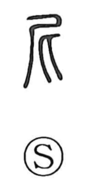

尼

Kun: ama | On: ni
to approach ・ buddhist nun
Explanation
Composed of 尸 and 匕, both originally human figures, this character depicts one person leaning in against the back of another. From that image it first conveyed the sense of drawing near and becoming familiar. In later usage it came to designate a Buddhist nun, as seen in compounds like 尼僧 and 僧尼. The graph also echoes in tradition surrounding Confucius: he was said to have been born at Mount Ni (尼山), from which his style name Zhong Ni (仲尼) was formed, while his given name Qiu (丘) reflects a division of the place name Ni Qiu (尼丘).